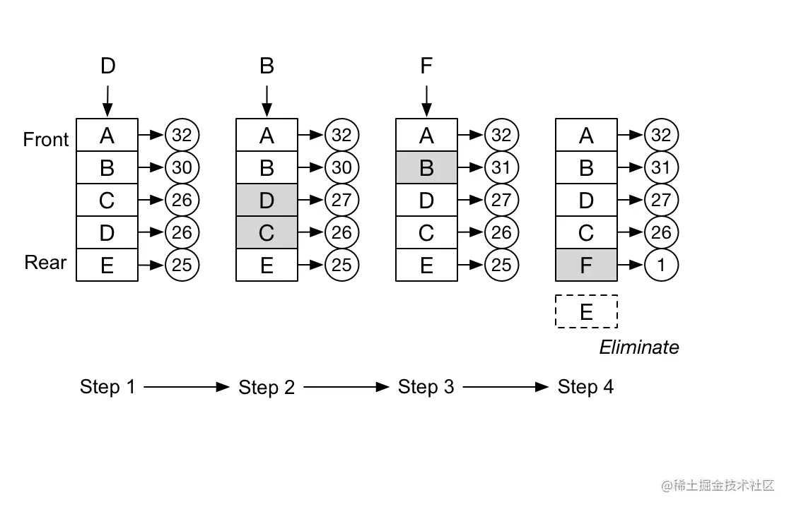
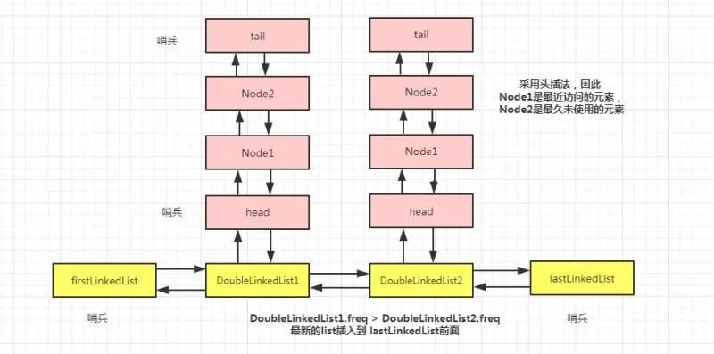

[toc]
介绍
LFU全称是最不经常使用算法（Least Frequently Used），LFU算法的基本思想和所有的缓存算法一样，都是基于locality假设（局部性原理）：
如果一个信息项正在被访问，那么在近期它很可能还会被再次访问。
LFU是基于这种思想进行设计：一定时期内被访问次数最少的页，在将来被访问到的几率也是最小的。
相比于LRU（Least Recently Use）算法，LFU更加注重于使用的频率。
原理
LFU将数据和数据的访问频次保存在一个容量有限的容器中，当访问一个数据时：
该数据在容器中，则将该数据的访问频次加1。
该数据不在容器中，则将该数据加入到容器中，且访问频次为1。
当数据量达到容器的限制后，会剔除掉访问频次最低的数据。下图是一个简易的LFU算法示意图。

上图中的LRU容器是一个链表，会动态地根据访问频次调整数据在链表中的位置，方便进行数据的淘汰，可以看到，在第四步时，因为需要插入数据F，而淘汰了数据E。
LFU实现
和LRU类似, 都可以用数组或者链表来实现, 只不过要遍历全链表, 性能都不太好, 因为数据和频率在一起,
基于双哈希表实现
所以换为用 map 键值对来维护，用频次作为键，用当前频次对应的一条具有先后访问顺序的链表来作为值; 再一个map存 key和数据的映射
class LFUCache {
private int capacity; // 容量限制
private int size; // 当前数据个数
private int minFreq; // 当前最小频率
private Map<Integer, Node> map; // key和数据的映射
private Map<Integer, LinkedHashSet<Node>> freqMap; // 数据频率和对应数据组成的链表
public LFUCache(int capacity) {
this.capacity = capacity;
this.size = 0;
this.minFreq = 1;
this.map = new HashMap<>();
this.freqMap = new HashMap<>();
}
public int get(int key) {
Node node = map.get(key);
if (node == null) {
return -1;
}
// 增加数据的访问频率
freqPlus(node);
return node.value;
}
public void put(int key, int value) {
if (capacity <= 0) {
return;
}
Node node = map.get(key);
if (node != null) {
// 如果存在则增加该数据的访问频次
node.value = value;
freqPlus(node);
} else {
// 淘汰数据
eliminate();
// 新增数据并放到数据频率为1的数据链表中
Node newNode = new Node(key, value);
map.put(key, newNode);
LinkedHashSet<Node> set = freqMap.get(1);
if (set == null) {
set = new LinkedHashSet<>();
freqMap.put(1, set);
}
set.add(newNode);
minFreq = 1;
size++;
}
}
private void eliminate() {
if (size < capacity) {
return;
}
LinkedHashSet<Node> set = freqMap.get(minFreq);
Node node = set.iterator().next();
set.remove(node);
map.remove(node.key);
size--;
}
void freqPlus(Node node) {
int frequency = node.frequency;
LinkedHashSet<Node> oldSet = freqMap.get(frequency);
oldSet.remove(node);
// 更新最小数据频率
if (minFreq == frequency && oldSet.isEmpty()) {
minFreq++;
}
frequency++;
node.frequency++;
LinkedHashSet<Node> set = freqMap.get(frequency);
if (set == null) {
set = new LinkedHashSet<>();
freqMap.put(frequency, set);
}
set.add(node);
}
}
class Node {
int key;
int value;
int frequency = 1;
Node(int key, int value) {
this.key = key;
this.value = value;
}
}
基于两个双向链表嵌套
用双hash的方式, 结构有些复杂, 所以采用两个链表的方式, 分别叫做外层链表，内层链表 ; 此方案全是链表的增删操作，因此时间复杂度可到 O(1)。

我们把整体看成一个由 DoubleLinkedList组成的双向链表，然后，每一个 DoubleLinkedList 对象中又是一个由 Node 组成的双向链表。像极了 HashMap 数组加链表的形式。
外层链表是按频次大小排序(当前频次变化时,移动的内层链表的节点, 不是外层链表的节点), 并且 内层节点使用头插法, 这样可以解决缓存末端"抖动"问题,还是很快找到要移除的节点, 即:
//频次最小，最久未访问的元素，cache满时需要删除
lastLinkedList.pre.tail.pre
完整代码
public class LFUCache3 {
Map<Integer,Node> cache;
/**
* 这两个代表的是以 DoubleLinkedList 连接成的双向链表的头尾节点，
* 且为哨兵节点。每个list中，又包含一个由 node 组成的一个双向链表。
* 最外层双向链表中，freq 频次较大的 list 在前面，较小的 list 在后面
*/
DoubleLinkedList firstLinkedList, lastLinkedList;
int capacity;
int size;
public LFUCache3(int capacity){
this.capacity = capacity;
cache = new HashMap<>();
//初始化外层链表的头尾节点，作为哨兵节点
firstLinkedList = new DoubleLinkedList();
lastLinkedList = new DoubleLinkedList();
firstLinkedList.next = lastLinkedList;
lastLinkedList.pre = firstLinkedList;
}
//存储具体键值对信息的node
private class Node {
int key;
int value;
int freq = 1;
Node pre;
Node next;
DoubleLinkedList doubleLinkedList;
public Node(){
}
public Node(int key, int value){
this.key = key;
this.value = value;
}
}
public int get(int key){
Node node = cache.get(key);
if(node == null) return -1;
freqInc(node);
return node.value;
}
public void put(int key, int value){
if(capacity == 0) return;
Node node = cache.get(key);
if(node != null){
node.value = value;
freqInc(node);
}else{
if(size == capacity){
/**
* 如果满了，则需要把频次最小的，且最久未访问的节点删除
* 由于list组成的链表频次从前往后依次减小，故最小的频次list是 lastLinkedList.pre
* list中的双向node链表采用的是头插法，因此最久未访问的元素是 lastLinkedList.pre.tail.pre
*/
//最小频次list
DoubleLinkedList list = lastLinkedList.pre;
//最久未访问的元素，需要删除
Node deadNode = list.tail.pre;
cache.remove(deadNode.key);
list.removeNode(deadNode);
size--;
//如果删除deadNode之后，此list中的双向链表空了，则删除此list
if(list.isEmpty()){
removeDoubleLinkedList(list);
}
}
//没有满，则新建一个node
Node newNode = new Node(key, value);
cache.put(key,newNode);
//判断频次为1的list是否存在，不存在则新建
DoubleLinkedList list = lastLinkedList.pre;
if(list.freq != 1){
DoubleLinkedList newList = new DoubleLinkedList(1);
addDoubleLinkedList(newList,list);
newList.addNode(newNode);
}else{
list.addNode(newNode);
}
size++;
}
}
//修改频次
private void freqInc(Node node){
//从当前频次的list中移除当前 node
DoubleLinkedList list = node.doubleLinkedList;
if(list != null){
list.removeNode(node);
}
//如果当前list中的双向node链表空，则删除此list
if(list.isEmpty()){
removeDoubleLinkedList(list);
}
//当前node频次加1
node.freq++;
//找到当前list前面的list，并把当前node加入进去
DoubleLinkedList preList = list.pre;
//如果前面的list不存在，则新建一个，并插入到由list组成的双向链表中
//前list的频次不等于当前node频次，则说明不存在
if(preList.freq != node.freq){
DoubleLinkedList newList = new DoubleLinkedList(node.freq);
addDoubleLinkedList(newList,preList);
newList.addNode(node);
}else{
preList.addNode(node);
}
}
//从外层双向链表中删除当前list节点
public void removeDoubleLinkedList(DoubleLinkedList list){
list.pre.next = list.next;
list.next.pre = list.pre;
}
//知道了它的前节点，即可把新的list节点插入到其后面
public void addDoubleLinkedList(DoubleLinkedList newList, DoubleLinkedList preList){
newList.pre = preList;
newList.next = preList.next;
preList.next.pre = newList;
preList.next = newList;
}
//维护一个双向DoubleLinkedList链表 + 双向Node链表的结构
private class DoubleLinkedList {
//当前list中的双向Node链表所有频次都相同
int freq;
//当前list中的双向Node链表的头结点
Node head;
//当前list中的双向Node链表的尾结点
Node tail;
//当前list的前一个list
DoubleLinkedList pre;
//当前list的后一个list
DoubleLinkedList next;
public DoubleLinkedList(){
//初始化内部链表的头尾节点，并作为哨兵节点
head = new Node();
tail = new Node();
head.next = tail;
tail.pre = head;
}
public DoubleLinkedList(int freq){
head = new Node();
tail = new Node();
head.next = tail;
tail.pre = head;
this.freq = freq;
}
//删除当前list中的某个node节点
public void removeNode(Node node){
node.pre.next = node.next;
node.next.pre = node.pre;
}
//头插法将新的node插入到当前list，并在新node中记录当前list的引用
public void addNode(Node node){
node.pre = head;
node.next = head.next;
head.next.pre = node;
head.next = node;
node.doubleLinkedList = this;
}
//当前list中的双向node链表是否存在有效节点
public boolean isEmpty(){
//只有头尾哨兵节点，则说明为空
return head.next == tail;
}
}
}
redis 中的LFU
它和LRU规则一样, 利用在key中时间钟字段, 不过把内部时钟的24位分成两部分，前16位代表时钟，后8位代表一个计数器。8位只能代表255，但是redis并没有采用线性上升的方式，而是通过一个复杂的公式，通过配置两个参数来调整数据的递增速度。也会和LRU一样, 存在一个淘汰池, 从淘汰池中redis会对内部时钟最小的key进行淘汰（最小表示最不频繁使用），注意这个过程也是根据策略随机选择键
更多详见: Redis的淘汰策略LRU与LFU
Redis的缓存淘汰策略LRU与LFU - 简书 (jianshu.com)